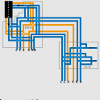

500 Trains and a network trés difficile (analysis)
Finally! We reached 500 trains and Town D is done! Only a SLH in the south is missing. That is a very good news.
Maybe you recognised the discussions about this network plan. The concept became more and more LLX_XRR, what means we have a normal LL_RR network, for all the primary/raw cargo types like wood and food (we call them 1st tier). The X is an abbreviation for express and all secondary/produced cargo types like goods, steel, paper (we call them 2nd tier). The system was not often used yet and therefor we don’t know very much about it and its ideas. But after hours of discussion (especially Pharzox and me) I want to show you some results…
And oh… please check the vote, we are very interested in what kind of network you like?
An Overview about LLX_XRR

The sketch shows you the seperation of both systems (blue = 1st tier; orange = 2nd tier). As you can see, BBHs are easier to build and SLHs are the same thing as in a normal LL_RR-networks ignoring the X track completely.

Pro’s and Con’s
The concept isn’t too hard to understand, but accidently became overcomplicated in our current game.
Now I want to show you the good and bad points of this concept.
Pro’s
- seperated tracks make it easy to build BBHs and SLHs
- no gridlocks due to 2nd tier trains waiting for goods while blocking the entrance of 1st tier trains (gridlock)
- easier train management
- high network capacity, because of extra tracks for 2nd tier trains (+30% capacity compared with LL_RR)
- BBHs, SLHs and all other construction are small
Con’s
- connecting wrong tracks with eachother will cause a lot of lost trains: a mistake is bigger problem than in conventional networks
- balancing is only possible at the LL__RR part
- the X part has only one track, online prio’s are possible
- high and fast jam risc at the X track if trains are not managed with waypoints or routed clever somehow else
- the capacity is still limited to LL_RR (expect only 60-70% use the LL_RR part), what gives you 130-140% capacity of a common LL_RR network
- a lot of train management is needed
Compared with the conventional LL_RR layout this system is way better.
Explanation for the Calculation:
– 1st tier trains are 60-70% (depending on the amount of coal trains this can heavily vary)
– 2nd tier trains are 30-40%
Compared with LL_RR only 60-70% of all trains use this part -> 30-40% more capacity. All in all this is a solid concept which extends the LL_RR concept. But its not very coopish, because trains use unshared tracks, what is easier to build and doesn’t create the funky network flow. You know what I mean. 😛 (looking at TTT and PSgame#34).
Beyond the Horizon
I am a fan of fully flexible and balanced network types, therefor we should look at the LLL_RRR concept.
This idea isn’t that far away, because we just integrate the 2nd tier into the complete network. The main disadvantage, of course, its very hard to build (even I have to cope with it) and those monster constructions are very big.
The main advantage, compared with LLX_XRR:
Imagine both 1st tier tracks are blocked, due to heavy load or what happens more often, a wave of trains. The train has to wait until one of both tracks is free to join the mainline. Because of the network style, trains are not allowed in xLL_RR (my new word creation stands for “extended LL_RR” ^^) to join the third track.
Trains have to wait, even if the third track is free. With a full flexible LLL_RRR network this doesn’t happen as fast as in this case (33% later), because trains are balanced between three tracks. Another point is trains don’t get lost as fast as in xLL_RR if you do a mistake.
In my opinion the capacity of LLL_RRR is higher than the one of xLL_RR. Compared with LL_RR, we have one more track what means we have 150% of the capacity. That’s 10-20% more than we have with xLL_RR + more flexibility with full load balancers.
Leaving this universe…
I really like the idea of xLL_RR, but balancers for 2nd tier trains are something significant and they are missing in this concept. And there is one thing to do. Lets add a second track for 2nd tier trains too, and BOOM they are balanced. In fact we have LLXX_XXRR then, which I would call xxLL_RR. Two LL_RR networks layed over eachother, but not combined. This is just an idea, but I want you to think about it.
Another thing I bear in mind is a real 2xLL_2xRR network, it might be not as difficult as real LLL_RRR, but has gigantic capacities.
Therefor we need some real good balancers. Maybe you have a great idea? I have one and I’ll show you tomorrow.
What are you’re thoughts about this thematic? Maybe missed some really important Pro’s and Con’s.
Just tell us and don’t forget to vote. 😉
Categories: Community News, Public Server
Phazorx May 16, 2007 03:54
I’d like to add a few things here… For starters this kind of layout only applicable to cargo games with multiple (at best – paired) drops for same kind of 1st tier cargo.
Con: lack of ability to balance – meaning ratio between secondary and primary cargo is important. Delivery of only 1st tier goods (such as pax, coal, valuables, water, gold, diamonds) reduces usability of such network type.
Pro: second tier can be balanced with directions rather lanes. In current game there are 2 close to identical ways for trains to go between A-C and D-B
Con: BBH complexity is close to LLL_RRR if all directions of ML are equal.
Pro: Due to separated nature of traffic it is possible to easily use different ML width (number of lanes) and various separation/balancing technique (current game uses thicker ML towards towns from BBHs). In this case balancers are also easier to deploy, but there are tricks on what is adviced to balance – like lanes of same direction should not be muxed at BBHs, this is very likely to become major bottleneck.
Pro: possibility to relatively easy upgrade to more X lanes between any BBHs (assuming there was room left for that in fitrst place of course).
Pro: express lane with no joins on SLHs is less vulnerable to any disruption from entering trains and hence less prone to slowdow/stop.
Pro: posibility to use different lengths and speeds for express and regular traffic. Trains hit different stations, and use different tracks for most part.
As far as LLXX_XXRR goes – I’m not sure if it is feasible to use 2 tracks for secondary, in case if it is bidirectional cargo traffic (trains go full both ways) – same amount of trains can transfer 50-60% more compared to primary trains that only carry cargo one way. Meaning that if most of traffic oriented for “convertable to second tier”, secondary to primary trains ratio is close to 1:2 and faster X track has adequate ability to cary as much as regular. A hybrid network, where X tracks are available to full first tier trains as well could be more beneficial approach sort of like: LL(X+F)X_X(X+F)RR or even LL(X+F)(X+F)_(X+F)(X+F)RR. However, that greatly complicates SLH design since now they must have SL merger balanced on 3 or 4 tracks.
Mucht May 17, 2007 11:26
Actually, this should have been a Member Zone game…
TRauMa June 22, 2007 15:40
Make the X tracks maglev, and you get an optical distinction and very fast delivery of the 2nd tier goods (= $$$). Of course that won’t work with dbsetxl or other realism mods.